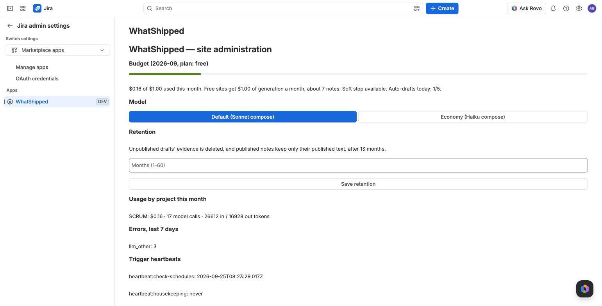

Budgets and pricing
Price
| Users on the site | Price |
|---|---|
| 1 to 10 | Free |
| 11 or more | $1.00 per user per month |
Atlassian bills you on your existing Atlassian invoice. Trials, renewals, refunds and cancellations are handled by Atlassian under its Marketplace terms.
Why there is a drafting budget
Every draft costs money to run. Atlassian charges us for Forge LLMs by use. So each site has a monthly drafting budget, shown in dollars. You never need to think in tokens.
| Plan | Monthly drafting budget |
|---|---|
| Free (up to 10 users) | $1.00, about 7 notes of typical size |
| Trial | $6.00 |
| Paid | $0.20 per user, at least $2.50 and at most $60.00 |
A typical note of about 40 issues for one audience costs around $0.14. More issues or more audiences cost more.
The paid budget uses a count of user accounts on your site. It can be higher than your Jira user count, which only raises the budget.
The meter
The project page shows a meter such as "$0.62 of $1.00 used this month". Before each draft you also see an estimate for that draft.
At 80% used, a warning appears.
What happens when it runs out
- Soft stop. If a draft would take you over the budget, WhatShipped runs that one draft on the economy model instead. This happens once per month.
- Hard stop. After that, new drafts, regenerations and voice previews are refused with "This site has used its generation budget for the month."
While drafting is stopped:
- Editing, copying, publishing and History all keep working.
- Scheduled digests that fall due are recorded in History as failed, with the budget message. The schedules stay on.
- Auto-drafts on release need at least 10% of the budget left, so they stop a little earlier.
When it resets
On the 1st of each month (UTC). The soft stop is available again too.
Admin page
Jira admins open Jira administration > Apps > WhatShipped. It shows:
- the site meter, the plan and whether the soft stop has been used;
- auto-drafts today, out of 5;
- usage by project this month, in dollars, model calls and tokens;
- errors by type over the last 7 days;
- when the background jobs last ran;
- the retention setting. See Security.

Economy model
On the admin page you can switch drafting from Default (Claude Sonnet writes the final draft) to Economy (Claude Haiku writes it). Economy costs less per note, so the budget goes further. Reading the issues always uses Haiku.
Per-request limit
Any single request over 300 issues or about $1.00 is refused, whatever budget is left. See Release notes and sprint digests.